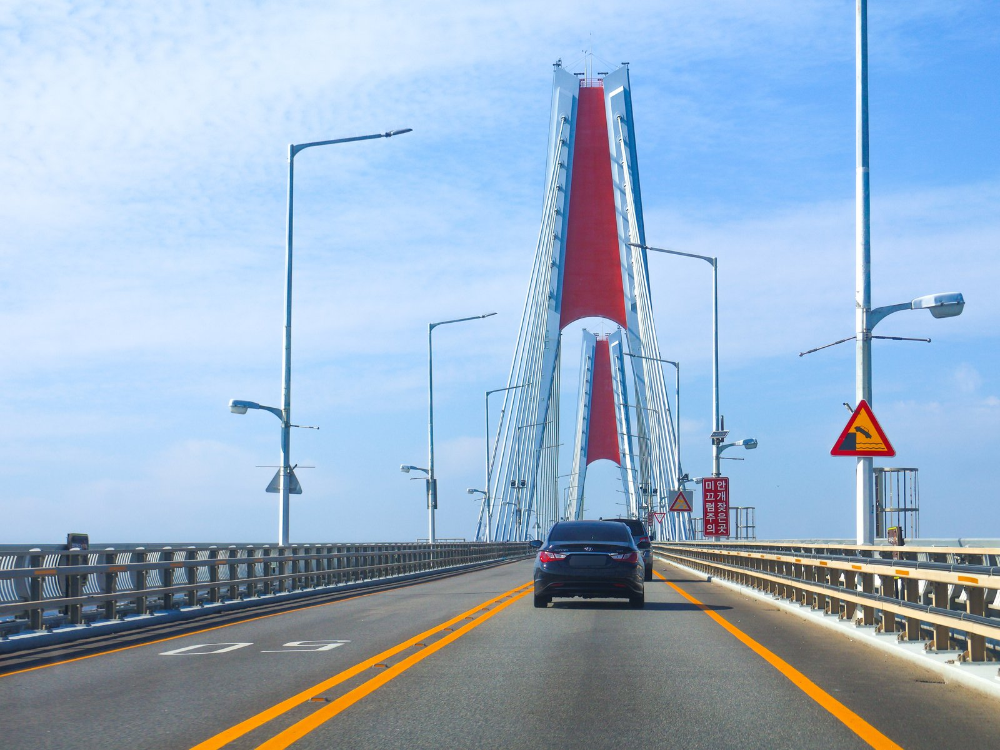
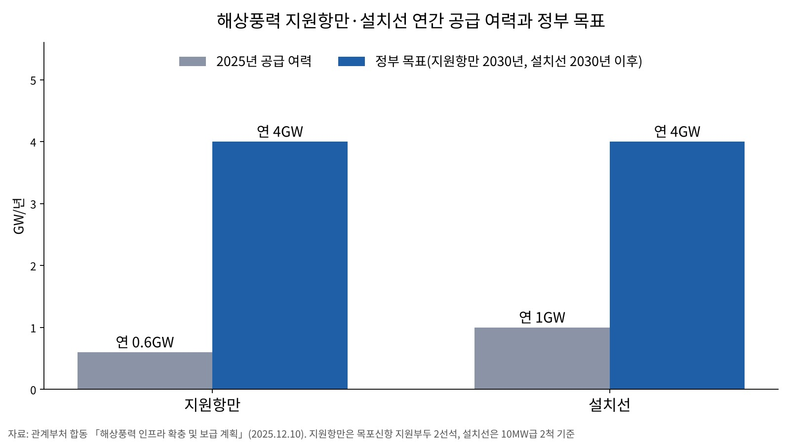

[해상풍력 기획④] 설치항만 후보로 꼽힌 인천신항, 인천시는 정비 거점 구상
인천대교 높이 70m, 대교 안쪽 5개 항은 설치선 못 지나
지원부두 사업화 방안 연말까지, 2032년 조성 목표
AI경제저널=김갑봉 기자 | 인천시(시장 박찬대)가 인천신항 해상풍력 지원부두의 사업화 방안을 올해 말까지 마련한다고 지난 7월 20일 밝혔다. 특수목적법인(SPC) 설립도 추진한다. 부두 조성은 2032년까지 마칠 계획이다.
인천시가 그린 이 부두의 몫은 유지보수 거점이다. 그런데 2021년 인천 항만 입지조사는 인천 6개 항 가운데 신항만 설치항만 후보로 꼽았다. 정부의 해상풍력 계획은 이 산업을 제조·설치·유지보수 단계로 나눈다.
해수부 고시 지원부두 720m, 정비 허브 구상
인천시는 해양수산부가 7월 20일 고시한 「제4차 전국 무역항 기본계획 수정계획(2026~2030)」에 인천신항 해상풍력 지원부두가 담겼다고 밝혔다. 인천항 고시문에 적힌 규모는 720m다. 이 사업에는 진입항로 준설이 포함된다.
자리는 신항 1-2단계 부두 동측이다. 고시문은 이 부두에 해상풍력 기자재 물류 기능을 확보한다고 적었다. 인천항 항목에서 해상풍력이 들어간 시설은 이 부두 하나다.
인천시는 이 부두를 유지보수 허브로 조성한다고 밝혔다. 통합관제센터, 안전훈련센터, 자재창고, 부품 교체·정비 시설을 한곳에 모으는 구상이다. 허브에는 드론·로봇 활용, 인공지능(AI) 기반 예측진단 같은 미래 기술의 연구·실증도 연계할 예정이다.
사업은 항만법에 따른 비관리청 항만개발사업으로 추진하고, 민간투자로 구체화할 계획이다. 인천시는 개발사업자와 설계·조달·시공(EPC) 사업자를 상대로 수요조사를 하고 있다고 밝혔다.
인천시는 관계기관 협의와 인허가 등 후속 행정절차를 거쳐 민선 9기 임기 안에 착공하겠다고 밝혔다.
인천대교 70m, 설치선 못 지나는 뱃길
설치 단계를 맡는 항만에는 높이 조건이 붙는다. 인하대학교는 2021년 12월 「인천 해상풍력 배후항만 입지조사용역 보고서」를 냈다. 보고서는 설치선이 하부구조물인 모노파일을 갑판에 세워 싣고 다닌다고 설명했다.
그래서 뱃길 위로 최소 150m 높이가 비어 있어야 한다. 보고서를 보면 해수면에서 교량까지 높이는 영종대교 35m, 인천대교 70m다. 보고서 작성 당시 계획 중이던 제3연륙교는 41m다.
경인항, 북항, 내항, 연안항, 남항은 바다로 나가려면 인천대교 밑을 지나야 한다. 보고서는 이 항만들을 설치항만 후보에서 빼고 신항만 검토했다. 교량을 지나지 않는 신항은 설치항만 후보지로 적합하다고 판정했다.
정비 단계를 맡는 항만은 높이 조건이 5m 이상이다. 보고서는 인천 항만 대부분이 이 5m 조건을 만족한다고 봤다. 그래서 신항을 포함한 모든 항만을 검토했다.
설치항만 51만㎡, 정비항만 10만2000㎡
같은 보고서는 국내외 사례와 인천 해상풍력 사업자 요건을 모아 항만 기준을 냈다. 설치항만은 부지 51만㎡, 접안시설 600m, 수심 14m 이상이다. 정비항만은 부지 10만2000㎡, 접안시설 150m, 수심 5m 이상이다.
국제 연구도 설치항만 면적 기준을 냈다. 미국 델라웨어대학교 세라 파키슨·윌렛 켐프턴 연구팀은 2022년 국제학술지 『에너지 폴리시』에 논문을 실었다.
연구팀은 12~14MW 터빈을 다루는 설치항만 요건을 부지 40만~80만㎡로 정리했다. 1GW 사업 하나는 건설 기간 2년 동안 약 22만㎡를 차지한다고 분석했다.

인천시는 영흥도도 배후항만 후보지로 검토해 왔다. 영흥도 안 시유지는 82만㎡다. 인천시는 2024년 6월 당시 영흥화력발전소 석탄재 처리장에 추가 용지를 확보하는 방안을 모색했다.
영흥 미래에너지파크 사업 전체 면적은 375만㎡다. 이 가운데 145만㎡는 공유수면 매립이다. 이번 수정계획 인천항 고시문에는 영흥도가 없다.
국내 지원항만 연 0.6GW, 목표 연 4GW
기후에너지환경부와 해양수산부 등 관계부처는 지난해 12월 10일 「해상풍력 인프라 확충 및 보급 계획」을 내놨다. 이 계획은 국내에서 해상풍력을 실제로 지원하는 항만을 목포신항 지원부두 2선석 하나로 적었다. 공급 여력은 연 0.6GW다.
정부는 2030년까지 항만 공급 여력을 연 4GW 수준으로 늘린다는 목표를 세웠다. 같은 계획은 인천항과 군산항의 신규 지원부두 개발을 항만기본계획 수정계획에 넣는다고 밝혔다. 7월 고시에 인천항 지원부두가 담겼다.
계획을 보면 국내 설치선은 10MW급 현대 프론티어호와 한산1호 두 척이다. 두 척이 한 해에 공급할 수 있는 양은 1.0GW다. 정부는 2030년 이후 설치선을 6척 이상으로 늘려 연 4GW 이상을 공급한다는 목표다.
계획은 산업연구원 분석을 인용해 해상풍력 1MW를 설치할 때 일자리 14명이 생긴다고 적었다. 같은 기준으로 육상풍력은 10명, 태양광은 8명이다.

인천신항 예타 모의, 비용편익비 0.934
한국에너지공과대학교(KENTECH)와 사단법인 넥스트 연구진은 지난 1월 16일 이슈페이퍼를 냈다. 제목은 「해상풍력 설치항만 예비타당성조사 제도 개선 제언」이다.
연구진은 인천신항 1-2단계 동측에 설치항만을 짓는 사업을 예비타당성조사 방식으로 모의 평가했다.
현행 지침은 선박이 싣는 양을 재화중량톤수(DWT)로 잰다. 이 지침을 그대로 쓰면 비용편익비(B/C)가 0.5를 넘기 어려웠다.
연구진은 싣는 양을 한 항차에 실을 수 있는 터빈·하부구조물 세트 수로 세는 방식을 제안했다. 연 0.6GW 처리 기준으로 평균 B/C는 약 0.934였다.
설치선 적재 가정을 실제 운항 수준에 맞춘 민감도 분석에서는 평균 B/C가 1.109로 올랐다. 연구진은 설치항만이 선박 대기시간 감소, 착수 지연·작업 중단 위험 완화 등으로 프로젝트의 시간 비용을 줄일 수 있다고 봤다. 다만 지금까지의 선행연구와 예타 지침 체계만으로는 이를 표준화해 계량하기 어렵다고 밝혔다.
인천시가 밝힌 사업화 방안 마련 시한은 올해 말이다. 정부가 세운 연 4GW 항만 체계의 목표 연도는 2030년이다.
참고문헌
- Sara B. Parkison·Willett Kempton, 「Marshaling ports required to meet US policy targets for offshore wind power」, 『Energy Policy』 163, 엘스비어, 2022년, 112817, https://doi.org/10.1016/j.enpol.2022.112817
- 신재현·장서영·김은성·김승완, 「해상풍력 설치항만 예비타당성조사 제도 개선 제언」, 한국에너지공과대학교·사단법인 넥스트 이슈페이퍼, 2026년 1월 16일
- 조철희·문건웅·조성호·정승원, 『인천 해상풍력 배후항만 입지조사용역 보고서』, 인하대학교, 2021년 12월, 37~72쪽
- 해양수산부, 「제4차 전국 무역항 기본계획 수정계획(2026~2030)」 인천항 기본계획 수정계획, 해양수산부 고시 제2026-80호, 2026년 7월 20일, https://www.mof.go.kr/doc/ko/selectDoc.do?docSeq=67502&menuSeq=375&bbsSeq=9
- 관계부처 합동(기후에너지환경부·해양수산부·국방부·금융위원회), 「해상풍력 인프라 확충 및 보급 계획」, 보도자료와 붙임, 2025년 12월 10일
- 인천광역시, 「인천시, 인천신항으로 해상풍력 유지보수 산업 선점 나선다」, 보도자료, 2026년 7월 20일, https://www.incheon.go.kr/IC010205/view?repSeq=DOM_0000000015171786
- 김갑봉, 「2030년 인천해상풍력 6.2GW 목표... 지상과제는 배후항만」, 인천투데이, 2024년 6월 13일, https://www.incheontoday.com/news/articleView.html?idxno=248140
- 김갑봉, 「영흥 미래에너지파크 22조원, 정부 협의 없이 '자가발전'」, 인천투데이, 2025년 9월 21일, https://www.incheontoday.com/news/articleView.html?idxno=308621
[사진 출처]
- [사진 1] LandAndTree, 퍼블릭 도메인 헌정(CC0), 위키미디어 공용 「Incheon City Ongjin-gun Yeongheung Bridge 20241102 (01).jpg」, https://commons.wikimedia.org/wiki/File:Incheon_City_Ongjin-gun_Yeongheung_Bridge_20241102_(01).jpg
※ 이 기사는 AI 프로그램 클로드를 활용해 작성했습니다.
관련기사
- [해상풍력 기획③] 하반기 해상풍력 입찰 2.2GW, 공공주도 몫 300MW
- [해상풍력 기획②] 인천 공공 해상풍력 1000MW, 연내 전력계통 협의 목표
- [해상풍력 기획①] 인천 해상풍력 섬 주민 몫, 세 제도의 공백
저작권자 © AI경제저널 무단전재 및 재배포, AI학습 및 활용 금지